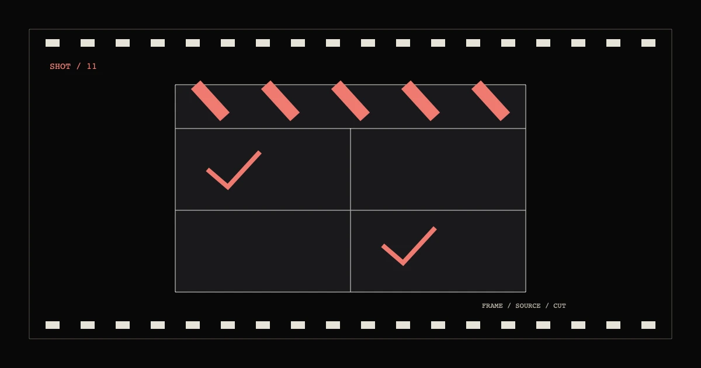

交叉剪辑室 / 11
%%S11_TITLE%%
%%S11_INTRO%%
- 编者
- %%AUTHOR_NAME%%
- 首映
- %%S11_PUBLISHED%%
- 复查
- %%S11_MODIFIED%%
- 状态
- %%S11_STATUS%%
01%%S11_H2_1%%
%%S11_TEXT_1%%
- %%S11_MODULE_HEAD_1%%
- %%S11_MODULE_TEXT_1%%
- %%S11_MODULE_HEAD_2%%
- %%S11_MODULE_TEXT_2%%
- %%S11_MODULE_HEAD_3%%
- %%S11_MODULE_TEXT_3%%
- %%S11_MODULE_HEAD_4%%
- %%S11_MODULE_TEXT_4%%
02%%S11_H2_2%%
%%S11_TEXT_2%%
| %%S11_TABLE_COL_1%% | %%S11_TABLE_COL_2%% | %%S11_TABLE_COL_3%% |
|---|---|---|
| %%S11_TABLE_ROW_1%% | %%S11_TABLE_CELL_1_1%% | %%S11_TABLE_CELL_1_2%% |
| %%S11_TABLE_ROW_2%% | %%S11_TABLE_CELL_2_1%% | %%S11_TABLE_CELL_2_2%% |
| %%S11_TABLE_ROW_3%% | %%S11_TABLE_CELL_3_1%% | %%S11_TABLE_CELL_3_2%% |
03%%S11_H2_3%%
%%S11_TEXT_3%%
%%S11_QUOTE%%
%%S11_QUOTE_SOURCE%%
映后问答
%%S11_FAQ_Q_1%%
%%S11_FAQ_A_1%%
%%S11_FAQ_Q_2%%
%%S11_FAQ_A_2%%
%%S11_FAQ_Q_3%%
%%S11_FAQ_A_3%%
%%S11_FAQ_Q_4%%
%%S11_FAQ_A_4%%
来源片单
- %%S11_SOURCE_LABEL_1%%
%%S11_SOURCE_NOTE_1%%
- %%S11_SOURCE_LABEL_2%%
%%S11_SOURCE_NOTE_2%%